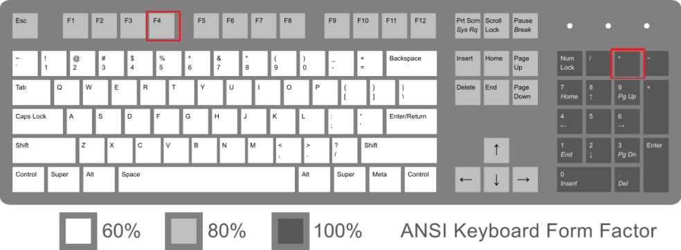
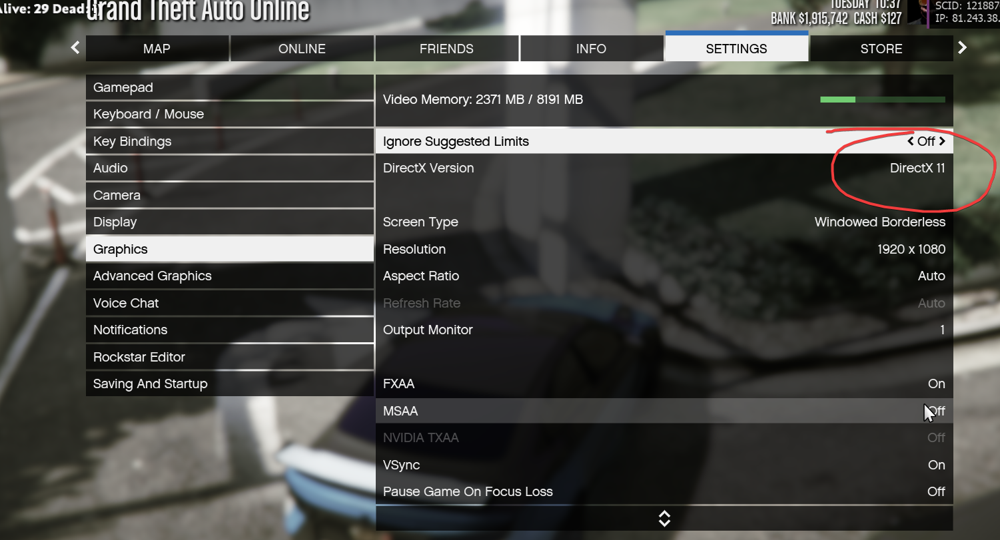
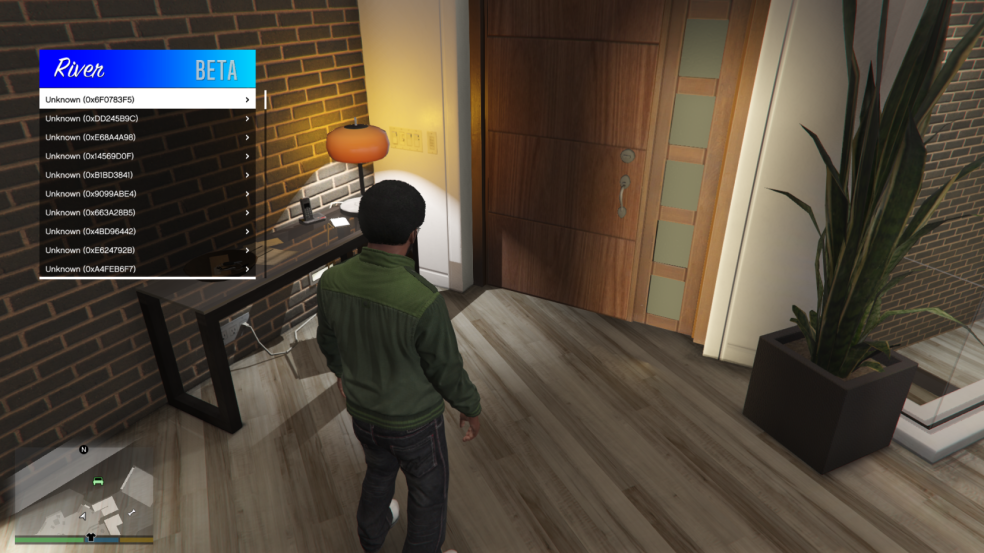
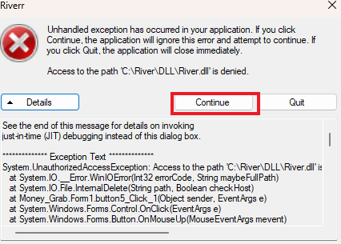

What is the menu open key?
You can open the menu by pressing on F4 or * .
Why is my game crashing on Inject?
Make sure to be on DirectX 11 not 9/10.1"
Go to setting > Graphics > DirectX version Change to DirectX 11"
Put the Downloadmake sure to install all of them this.
Why I'm getting weird translation strings ?
Put the English.json file into the River folder (C:\River) then press delete on your keyboard to unload the menu then press inject again.
Why I'm getting a "pastebin" error ?
Make sure you have your network enabled and use a VPN as your network or country banned pastebin (like turkey don't allow you to use pastebin).

Why I keep getting an error message when Im trying to inject?
Just press "Continue"
